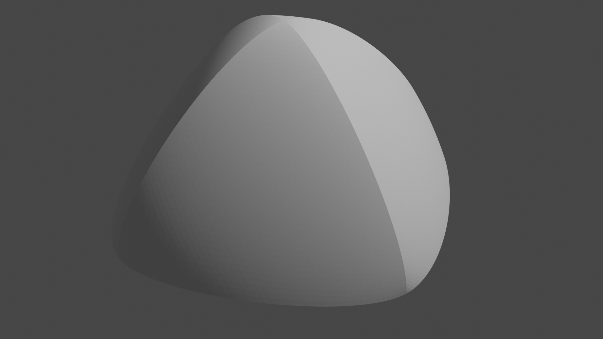
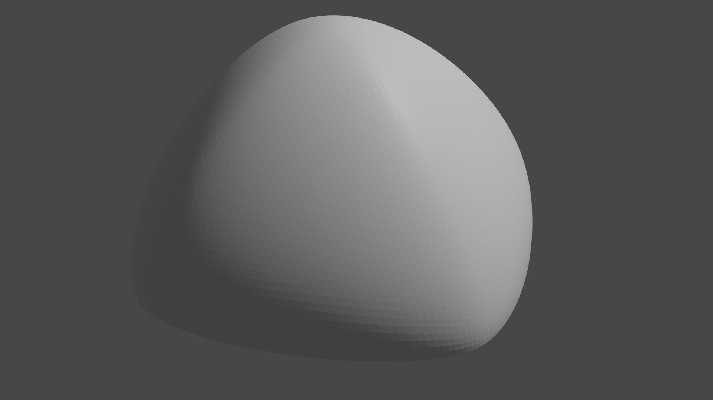
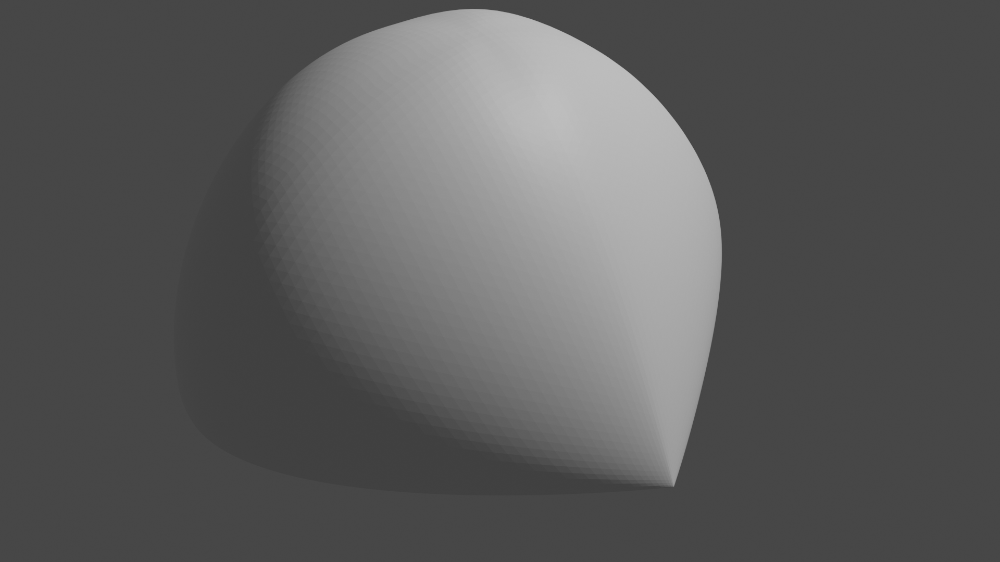
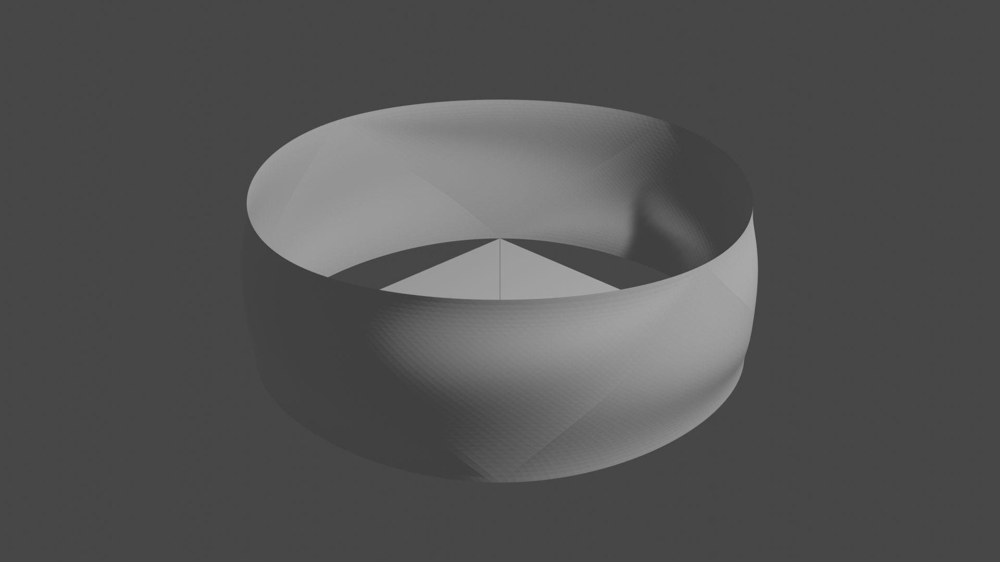
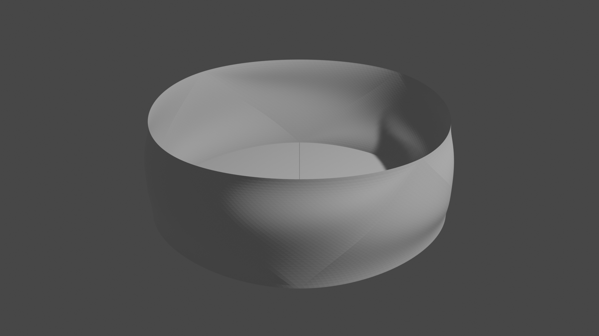

Shapes in computer graphics are often represented as mesh, set of triangles.
These are flat triangles in common.
To approximately represent curved surfaces with flat triangles,
mesh have to be subdivided, resulting large data size.
Though large size of 3D model data is also because of texture not only mesh, this article focus on curved mesh.
The curved point-normal triangle (PN triangle) is a way to represent curved surface.
PN triangle is a kind of Bezier triangle, which represent curved surface with polynomial formula.
PN triangle construct curved surface from its point and normal on the corners.
This is much reasonable rather than large number of flat triangles, though, is not perfect.
In this article, I propose
another variant of PN triangle which has no unintentional sharpness on the edge of triangles,
and a way to seal cracks around the discontinuous normal.
Conventional Point-Normal Triangle
Bezier Triangle
Let us started with standard point-normal triangles.
As mentioned before, point-normal triangle is a kind of Bezier triangle.
Cubic Bezier triangle is represented a formulas below.
\begin{align}
B_t(t_0, t_1, t_2) = \\
& +B_{p,0} \cdot t_0^3 +B_{p,1} \cdot t_1^3 +B_{p,2} \cdot t_2^3 \\
& +3 \cdot ( \\
& \ +B_{e,0,1} \cdot t_0^2 \cdot t_1 +B_{e,0,2} \cdot t_0^2 \cdot t_2 \\
& \ +B_{e,1,0} \cdot t_1^2 \cdot t_0 +B_{e,1,2} \cdot t_1^2 \cdot t_2 \\
& \ +B_{e,2,0} \cdot t_2^2 \cdot t_0 +B_{e,2,1} \cdot t_2^2 \cdot t_1 \\
&) \\
&+6 \cdot B_c \cdot t_0 \cdot t_1 \cdot t_2 \\
where\ & 0 \leq t_0 \leq 1, 0 \leq t_1 \leq 1, 0 \leq t_2 \leq 1, t_0+t_1+t_2 = 1
\end{align}
\( B_{p,0}, B_{e,0,1}, B_c, ... \) are control points.
For example, we use data set below.
\begin{align}
P_a &= (0,0,\sqrt{2}), & N_a &= normalize(P_a) \\
P_b &= (+1, +1, 0), & N_b &= normalize(P_b) \\
P_c &= (+1, -1, 0), & N_c &= normalize(P_c) \\
P_d &= (-1, -1, 0), & N_d &= normalize(P_d) \\
P_e &= (-1, +1, 0), & N_e &= normalize(P_e)
\end{align}
Tesselated \( \triangle ABC, \triangle ACD, \triangle ADE, \triangle AEB \) are shown below.
Surface around the corners are smooth, but on the edge of triangles these are not.
This is rendered with script on Blender.

Standard Point-Normal Triangle
Smoothing edges
Unintentional sharpness on the edges of the PN triangles indicate discontinuity of normal on the edges.
So I interpolate normals on the edges from the two end points of the edge,
then interpolate between two edges to make curved surface.
Edge itself is identical to the one of conventional PN triangle.
Normal on the edge is constructed as below.
\begin{align}
B_l(p_0,n_0, p_1,n_1)(t) &=
+B_p(p_0) \cdot t^3 +B_p(p_1) \cdot (1-t)^3
+3 \cdot (
+B_e(p_0,n_0, p_1) \cdot t^2 \cdot (1-t) +B_e(p_1,n_1, p_0) \cdot (1-t)^2 \cdot t
) \\
N_l(p_0,n_0, p_1,n_0)(t) &=
normalize(
v_n - v_u \cdot v_n . v_u
) \\
v_n &= B_l(p_0+n_0,n_0, p_1+n_1,n_1) - B_l(p_0,n_0, p_1,n_1) \\
v_u &= normalize(\frac{dB_l}{dt}) \\
B_{l,i,j}(t) &= B_l(p_i,n_i, p_j,n_j)(t) \\
N_{l,i,j}(t) &= N_l(p_i,n_i, p_j,n_j)(t)
\end{align}
Then, the curved surface is below.
\begin{align}
B_t(t_0, t_1) = B_l(B_{l,0,1}(t_0), N_{l,0,1}(t_0), B_{l,0,2}(t_0), N_{l,0,2}(t_0))(t_1) \\
where 0 \leq t_0 \leq 1, 0 \leq t_1 \leq 1
\end{align}
If you want \(t_0, t_1, t_2\) matching to ones of conventional PN triangle, formula below may useful.
\begin{align}
t_0 = u_0, t_1 = (1 - t_0) \cdot u_1, t_2 = 1 - t_0 - t_1
\end{align}
Example
Tesselated \( \triangle ABC, \triangle ACD, \triangle ADE, \triangle AEB \) are shown below.
Surface are all smooth.
This is rendered with script on Blender.

Normal on the Edge Interpolated
Weighted Normal
To control the curvature, you can add weight on normal.
\begin{align}
B_e(p_0,n_0,w_0, p_1) &= p_0 + 1/2 \cdot w_0 \cdot ((p_1-p_0) - n_0 \cdot (p_1-p_0).n_0) \\
W_l(w_0, w_1)(t) &= t \cdot w_0 + (1-t) \cdot w_1
\end{align}
It is equal to unweighted version when all weights are \( 2/3 \).
Example
\begin{align}
W_a &= 1 \\
W_b &= 0.5 \\
W_c &= 0.01 \\
W_d &= 1 \\
W_e &= 2/3
\end{align}
With these weights, Tesselated \( \triangle ABC, \triangle ACD, \triangle ADE, \triangle AEB \) are shown below.
On the point with minimum weight, corner and edge become sharp.
This is rendered with script on Blender.

Normal on the Edge Interpolated
Patching Crack
Crack
Shape with discontinuous normal, cylinder for an example, cannot be represented by PN triangles.
Some shape like tetrahedron can be represented by weighted version though, cylinder will have some crack.
Data set of cylinder and its result are below.
Note that some points have multiple normal.
\begin{align}
\triangle BB_uC, \triangle CC_uD, \triangle DD_uE, \triangle EE_uB, \\
\triangle B_uCC_u, \triangle C_uDD_u, \triangle D_uEE_u, \triangle E_uBB_u, \\
\triangle B_fC_fE_f, \triangle D_fE_fC_f
\end{align}
\begin{align}
P_{bu} &= (+\sqrt(2),0,1), & N_{bu} &= (+1,0,0) \\
P_{cu} &= (0,-\sqrt(2),1), & N_{cu} &= (0,-1,0) \\
P_{du} &= (-\sqrt(2),0,1), & N_{du} &= (-1,0,0) \\
P_{eu} &= (0,+\sqrt(2),1), & N_{eu} &= (0,+1,0) \\
P_{bf} &= (+1, +1, 0), & N_{bf} &= (0,0,-1) \\
P_{cf} &= (+1, -1, 0), & N_{cf} &= (0,0,-1) \\
P_{df} &= (-1, -1, 0), & N_{df} &= (0,0,-1) \\
P_{ef} &= (-1, +1, 0), & N_{ef} &= (0,0,-1)
\end{align}

Cracks on Cylinder
Patch
The edges around crack are known, so crack can be sealed by interpolation.
Normal around the crack are discontinuous, so linear interpolation does work enough.
Patch is represented as below.
\begin{align}
C_t(p_0,n_{00},w_{00},n_{01},w_{01}, p_1,n_{10},w_{10},n_{11},w_{11})(t_0, t_1) =
+ t_1 \cdot B_l(p_0,n_{00},w_{00} p_1,n_{10},w_{10})(t_0)
+ (1-t_1) \cdot B_l(p_0,n_{01},w_{01} p_1,n_{11},w_{11})(t_0)
\end{align}
Example
Adding patches below, cylinder can be rendered with no cracks.
This is rendered with script on Blender.
\begin{align}
C_t(P_b,N_b,1,N_{bf},0, P_c,N_c,1,N_{cf},0), \\
C_t(P_c,N_c,1,N_{cf},0, P_d,N_d,1,N_{df},0), \\
C_t(P_d,N_d,1,N_{df},0, P_e,N_e,1,N_{ef},0), \\
C_t(P_e,N_e,1,N_{ef},0, P_b,N_b,1,N_{bf},0)
\end{align}

Cracks on Cylinder